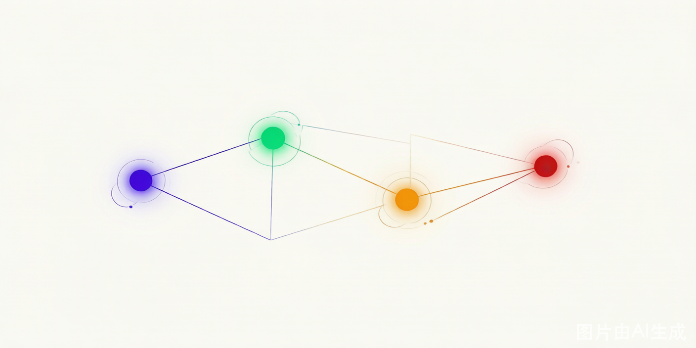

AI 全栈
知识地图
从 MicroGPT 到 DeepSeek-R1，从 CLIP 到 DALL·E 2——贯穿大语言模型、强化学习、对齐训练与多模态的完整学习路径。

阅读指引
三种角色，三条路径，按你的身份找到最合适的读法。
从 MicroGPT 起步建立直觉，按顺序推进，系统建立完整知识体系。适合零基础或希望打牢基础的读者。
直接深入架构细节与训练数学，利用章节间的交叉引用按需补全背景知识，快速对接工业实践。
按兴趣切入任意章节，跟着交叉引用在分支间自由探索，构建属于自己的知识连接网络。
四大知识分支
点击卡片进入对应分支，每个分支都是一篇完整的深度长文。
大语言模型
从 MicroGPT 的 68 行代码出发，逐步深入 Transformer、GPT-2 架构、位置编码、Softmax 温度采样，再到 InstructGPT 的 SFT + RM + PPO 三阶段对齐训练。
强化学习
从马尔可夫决策过程（MDP）的形式化定义出发，覆盖动态规划、蒙特卡洛、时序差分、Q-Learning、DQN、Policy Gradient、Actor-Critic，再到 PPO 和 GRPO 的数学推导。
RLHF 对齐训练
从 InstructGPT 论文出发，深入 SFT（监督微调）、RM（奖励模型训练）、PPO（强化学习优化）、PPO-ptx（预训练梯度保全）、拒绝采样、DPO，再到 DeepSeek-R1 的 GRPO 创新。
多模态 AI
从 ViT（Vision Transformer）将图像切成 patch 送入 Transformer，到 CLIP 的对比学习对齐图文表示，再到 DALL·E 2 的扩散模型生成图像，完整覆盖多模态的核心技术链路。
训练管线
从原始数据到收敛模型，八个紧密咬合的环节——每个步骤展开，看它在四大分支中如何各显神通。
公式与概念详解
交叉熵损失、Attention 矩阵乘法、REINFORCE 梯度估计、PPO 替代目标、DDPM 逆向过程… 所有关键公式的完整推导，集中在一页。
知识要点词典
40 个核心术语，按四大分支整理，附带精确定义和对应章节。
大语言模型 · LLM
- BPEByte-Pair Encoding：从语料中统计子词频率，迭代合并最高频字节对，构建紧凑词表，解决 OOV 问题（Ch1）
- Embedding可学习的查找表 wte ∈ ℝ|V|×d，把离散 token ID 映射为连续稠密向量，是模型"理解"文字的第一步（Ch2–3）
- Self-AttentionAttention(Q,K,V)=softmax(QKT/√d)V，让每个 token 看到序列中所有其他 token，是 Transformer 的核心（Ch3）
- Multi-Head将 Q/K/V 分成 h 组独立投影，并行计算 h 个注意力头，捕获不同语义子空间的关系（Ch3）
- FFN每层 Transformer 两次线性变换 + GELU 激活：FFN(x)=W2·GELU(W1·x)，提供大部分模型参数和非线性（Ch3）
- LayerNorm沿特征维度做标准化：x̂=(x−μ)/σ，再仿射变换 y=γx̂+β，稳定深层网络训练，Post-LN 放每层末尾（Ch3）
- Cross-EntropyCE=−Σiyilog(pi)，在语言模型中 y 是 one-hot 目标 token，等价于最大化正确 token 的对数似然（Ch2）
- Softmax将任意实向量 z 映射为概率分布：softmax(z)i=ezi/Σezj，语言模型中作用在 logits 上得到下一个 token 概率（Ch2）
- RoPE旋转位置编码：用旋转矩阵对 q,k 注入相对位置信息，外推性好，是 LLaMA 等现代 LLM 的标准选择（Ch3）
- Autoregressive自回归：模型一次预测一个 token，把上一步的输出拼回输入，循环直到生成结束符，是 GPT 系列的生成方式（Ch2–3）
强化学习 · RL
- MDP马尔可夫决策过程 (S,A,P,R,γ)：形式化描述"状态→动作→奖励→下一状态"的交互循环，是 RL 的数学基础（Ch4）
- Bellman Eq.价值函数的递归定义：Vπ(s)=Ea∼π[R(s,a)+γ·Vπ(s′)]，是动态规划和价值迭代的理论核心（Ch4）
- Q-Learning经典的 TD 学习算法：用 Q 表存储状态-动作价值，通过时序差分更新，off-policy，收敛到最优 Q*（Ch4）
- DQNDeep Q-Network：用神经网络替代 Q 表，配合 Experience Replay（打破相关性）和 Target Network（稳定目标），在 Atari 上超越人类（Ch4）
- Policy Gradient直接优化策略参数：∇J(θ)=Eτ∼πθ[∇log πθ(a|s)·R(τ)]，用回合总回报作为基线Free 的梯度方向（Ch5）
- Actor-CriticActor（策略网络）输出动作，Critic（价值网络）估计状态价值做基线，两者联合训练降低策略梯度的方差（Ch5）
- GAEGeneralized Advantage Estimation：ÂtGAE=Σ(γλ)lδt+l，λ∈[0,1] 在偏差（TD(0)）与方差（MC）间平滑折中（Ch5）
- PPO-ClipProximal Policy Optimization：用 clip 函数限制重要性采样比率 rt(θ)∈[1−ε,1+ε]，是 Trust Region 的简洁工程实现，ChatGPT 的训练算法（Ch6–8）
- GRPOGroup Relative Policy Optimization：对每个 prompt 采样 G 个回答，用组内相对排序替代 Critic 网络，省去价值函数估计，降低内存（Ch9）
- Trust Region信赖域：约束策略更新幅度 DKL(πold‖πnew)≤δ，防止单次更新破坏已学行为，TRPO 用共轭梯度精确求解，PPO 用 clip 近似（Ch8）
RLHF 对齐训练
- SFTSupervised Fine-Tuning：在高质量 (prompt, response) 对上做有监督训练，让模型学会"按指令回答"的基本格式（Ch10）
- RMReward Model：一个 Transformer 末尾加标量头，对同一 prompt 的两个回答打分 rθ(x,y)，训练目标是让高分回答排序靠前（Ch10）
- PPO-ptxPPO for LLM：在 PPO 目标上加预训练梯度项 β·log Pref(x)，防止模型在对齐训练中遗忘通用语言能力（Ch12）
- KL Penalty在 PPO 目标中加入 −β·DKL(πref‖πθ)，约束当前策略不偏离参考模型太远，是防止"奖励黑客"的关键（Ch12）
- DPODirect Preference Optimization：在 Bradley-Terry 模型下推导出的封闭解，把 RLHF 的三阶段压缩成一个 SGD 分类 loss，无需 RM 和 PPO（Ch11）
- Bradley-TerryP(yw≻yl)=σ(r(yw)−r(yl))：用 sigmoid 建模人类对两个回答的偏好概率，是 RLHF 和 DPO 的共同理论基础（Ch11）
- Rejection Samp.拒绝采样微调：对每个 prompt 生成 K 个回答，用 RM 打分保留前 N 个，用这些高质量样本做 SFT，是 PPO 前的朴素对齐方法（Ch10）
- GRPO-LLM把 GRPO 用于 LLM 对齐：对每个 prompt 采样 G 个回答，用 RM 打分后计算组内相对优势，无需单独训练 RM（DeepSeek-R1 做法）（Ch13）
- DeepSeek-R1用 GRPO 做推理对齐的旗舰模型：先 SFT 冷启动，再做多轮 GRPO，让模型自发产生"链式思考"和自检行为（Ch13）
- InstructGPTOpenAI 的三阶段对齐管线：SFT（教格式）→ RM（学偏好）→ PPO（强化对齐），是 RLHF 在 LLM 上的第一次成功实践（Ch12）
多模态 AI
- ViTVision Transformer：把图像切成 N 个 P×P patch，每个 patch 展平后线性投影为 token，像处理文本一样处理图像，分类用在 [CLS] token 上（Ch14）
- Patch Embed.图像块嵌入：将每个 P×P×3 的 patch 展平为 P²·3 维向量，再经可学习线性层 E∈ℝ(P²·3)×d 投影为 d 维 token（Ch14）
- CLIPContrastive Language-Image Pre-training：用双塔（文本 Transformer + 图像 ViT）做对比学习，把匹配的图文对拉近距离，是多模态的基础预训练范式（Ch15）
- Contrastive对比损失 L=−log[exp(sim(i,t)/τ)/Σexp(sim/τ)]：分子是匹配对的相似度，分母是所有对的相似度之和，训练目标是让对角线元素最大（Ch15）
- ClipCap用 CLIP 提取图像嵌入，映射为少量"前缀 token"，拼在文本前面输入 GPT-2，让语言模型以图像为上下文继续生成，实现图像描述（Ch16）
- DDPMDenoising Diffusion Probabilistic Model：前向 T 步逐渐加高斯噪声至纯噪，反向用 U-Net 学 pθ(xt−1|xt)，训练目标是预测所加噪声 ε（Ch17–18）
- CFGClassifier-Free Guidance：ε̂ = εθ(xt) + w·[εθ(xt,c)−εθ(xt,∅)]，在条件生成和无条件生成之间做线性外推，w 越大图像与提示越一致（但可能过饱和）（Ch19）
- U-Net扩散模型的骨干网络：编码器逐级下采样 + 解码器上采样 + 跳跃连接（skip connection）保留细节，每个残差块里嵌有时间步嵌入，是 DDPM 的标准架构（Ch18）
- DALL·E 2两阶段文生图：先训 CLIP Prior（把文本嵌入映射到图像嵌入空间），再用扩散 Decoder（Glide）从图像嵌入生成像素，实现"文本→图像"的完整管线（Ch20）
- Stable Diff.Stable Diffusion：在 VAE 的潜空间（而非像素空间）做扩散，U-Net 输入通道数大幅降低，在相同质量下提速 4–8×，是文生图的主流方案（Ch19）
章节索引
全书 21 章，按四大分支分组，点击任意章节直接跳转。
而是看见概念之间的连接。
—— 本知识地图的每一页，都在帮你建立这些连接。